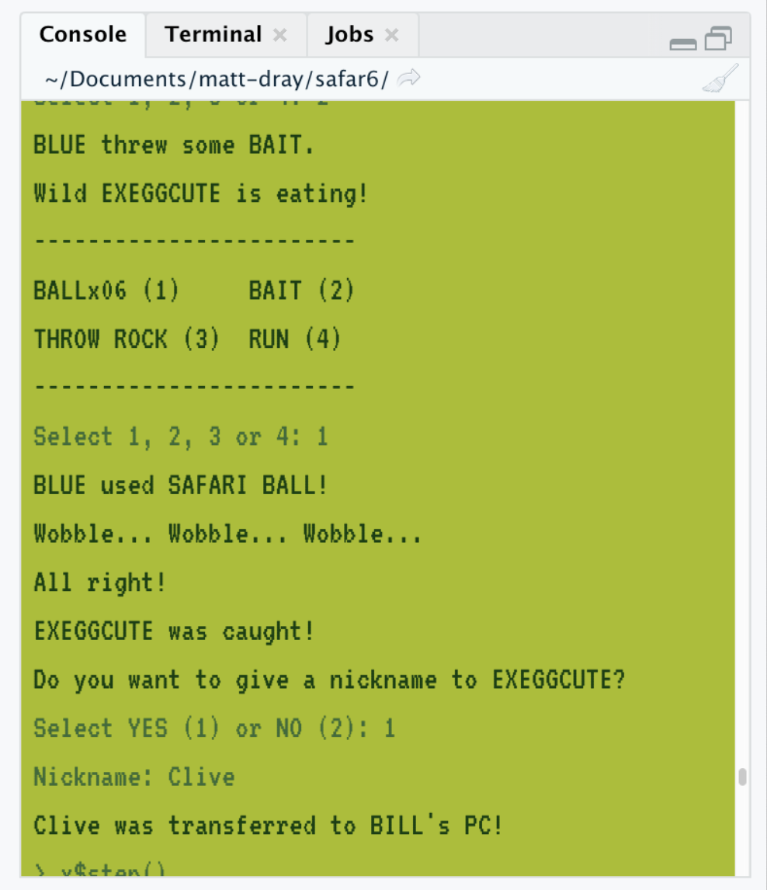
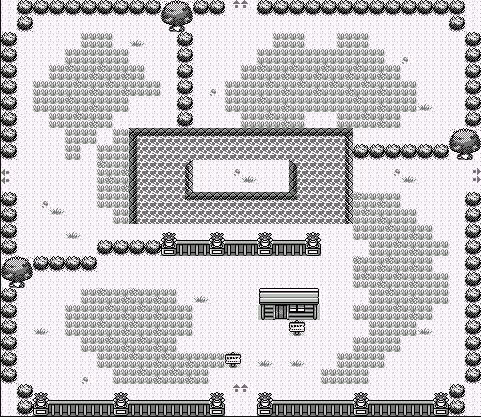
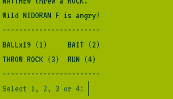

# Install first the the {remotes} package
remotes::install_github("matt-dray/safar6")
library(safar6)
tl;dr
I created the R package {safar6}, which contains an R6-class object to simulate a simplified, text-based version of the Safari Zone sub-area from Pokémon Blue.
I also made the ‘gamelad’ RStudio theme to mimic the screen of a pukey-green original Game Boy. Pair with a blocky monospace font like VT323 for that 8-bit experience.1
Kangaskhan you believe it?
Did you know you can play games in R?
I particularly like the text adventures The Secret of Landusia by Peter Prevos and Castle of R by Giora Simchoni
The latter uses object-oriented programming (OOP) for handling game elements, thanks to the {R6} package. So, a room in the castle is an R6-class object with specific fields (variables), like whether the door is open, and methods (functions) like openDoor() that can change the door state.
This is interesting because R is better known for being a function- rather than an object-oriented language. You can learn more about OOP in R from Hadley Wickham’s Advanced R book and more about the R6-class from the {R6} website.
A Chansey to learn
I wrote a post about using {R6} to simulate an Automatic Bell Dispenser (an ATM, basically) from Nintendo’s Animal Crossing: New Horizons (2020) game. Fields include savings and methods include withdraw(), for example.
Obviously my next step was to use {R6} for a game, but I wanted to start small. The original Pokémon2 games were effectively text adventures with some random-number generation and simple calculations going on in the background. Would it be possible to simulate some aspects of it?

Luckily, there’s an in-game sub-area that’s self-contained and much simpler than the mechanics in the rest of the world. In the The Safari Zone you’re only allowed to take 500 steps, you can only use a special type of ball to capture wild Pokémon (of which you only have 30) and you can’t reduce a wild Pokémon’s health (hit points, HP).
So I went ahead and wrote an R6-class object to mimic the Safari Zone and bundled it in the {safar6} R package.3
A quick Tauros of the game
You can install the package from GitHub. Loading the package provides a reminder of how to play.
# {safar6}
# Start game: x <- safari_zone$new()
# Take a step: x$step()Basically, the package contains an R6-class object SafariZone, which you initialise like safari_zone$new(). Make sure to assign a name to it (x in these examples). This starts a routine with some text from the game and some interactive elements. Sometimes you’ll be prompted for a response; type a value and hit enter to make a choice.
Here’s the opening sequence, which asks for your name and invites you to play:
x <- safari_zone$new()First, what is your name?
------------------------
NEW NAME (1)
BLUE (2)
GARY (3)
JOHN (4)
------------------------
Select 1, 2, 3 or 4:
> 1
Your name:
> THEW
Welcome to the SAFARI ZONE!
For just P500, you can catch all the
Pokemon you want in the park!
Would you like to join the hunt?
------------------------
MONEY: P500
YES (1) or NO (2)
------------------------
Select 1 or 2:
> 1
That'll be P500 please!
------------------------
MONEY: P0
------------------------
We only use a special POKe BALL here.
THEW received 30 SAFARI BALLs!
We'll call you on the PA when you run out of time or SAFARI BALLs!You can then ‘move around’ by using the step() method on your SafariZone object. This method does most of the hard work in {safar6}, since it contains all the logic required for a wild Pokémon encounter.
The underlying values and calculations in step() are all true to the original game. That includes the encounter rate, which is less than 1, so you’ll likely have to step() a number of times before you find a Pokémon.
For convenience, the step method prints the number of steps remaining:
x$step()499/500Each step is treated as though you’re walking through the tall grass, which is where you find wild Pokémon. There’s a weighted chance of encountering certain Pokémon at certain levels, but each wild Pokémon also has (hidden) randomised individual variation in its stats (HP, speed, etc) that impact your ability to catch it.
Here’s an encounter:
x$step()497/500
Wild VENONAT L22 appeared!
------------------------
BALLx30 (1) BAIT (2)
THROW ROCK (3) RUN (4)
------------------------
Select 1, 2, 3 or 4: At the prompt, you can throw a Safari ball straight away to attempt a catch, or you can run away from the encounter. You can also influence the Pokémon’s state: throw a rock to raise the catch chance (but you’ll also increase the flee chance) or throw bait to reduce the chance of fleeing (but that’ll also decrease the catch chance).
Wild VENONAT L22 appeared!
------------------------
BALLx30 (1) BAIT (2)
THROW ROCK (3) RUN (4)
------------------------
Select 1, 2, 3 or 4:
> 3
THEW threw a ROCK.
Wild VENONAT is angry!The Pokémon will be angry or eating for one to five turns.
When you throw a ball, the success of a capture attempt is determined by several factors, like the Pokémon’s HP, its level and its catch rate (possibly modified by rocks and bait). It may also run away given factors like its speed.
THEW threw a ROCK.
Wild VENONAT is angry!
------------------------
BALLx30 (1) BAIT (2)
THROW ROCK (3) RUN (4)
------------------------
Select 1, 2, 3 or 4:
> 1
THEW used SAFARI BALL!
Wobble...
Darn! The POKeMON broke free!You may want to change your strategy. More rocks, or some bait? While it’s still angry, you could take advantage of its heightened catch rate by throwing another ball.
Wild VENONAT is angry!
------------------------
BALLx29 (1) BAIT (2)
THROW ROCK (3) RUN (4)
------------------------
Select 1, 2, 3 or 4:
> 1
THEW used SAFARI BALL!
Wobble... Wobble... Wobble...
All right!
VENONAT was caught!Success! You can choose to give your ‘captured friend’ a nickname.
------------------------
Do you want to give a nickname to VENONAT?
YES (1) or NO (2)
------------------------
Select 1 or 2:
> 1
Nickname:
> Tajiri
Tajiri was transferred to BILL's PC!Try to catch as many as you can before you run out of steps or balls. You can x$pause() the game at any point to see your remaining stats and you can check out x$bills_pc to see what you’ve captured4.
x$pause()497/500
BALLx28
BILL's PC: 1x$bills_pc nickname species level
1 Tajiri VENONAT 22When the game is over, you’ll see an endscreen with your results.
------------------------
PA: Ding-dong!
Time's up!
PA: Your SAFARI GAME is over!
Did you get a good haul?
Come again!
------------------------
Result: 1 transferred to BILL's PC
nickname species level
1 Tajiri VENONAT 22The Safari Zone in the original game was pretty tricky. The Pokémon were flighty and it was especially hard to trap rare encounters like Chansey, Pinsir and Scyther.
The most captures I’ve made on a playthrough of {safar6} is three (!), so use that as a yardstick.
Exeggcute-ing the class
I tried to keep things simple, so there’s a number of omissions compared to the original game. For example, there’s no visuals or sounds; I’ve simulated only the ‘Center’ hub area of the Safari Zone; you walk around as though you’re always in tall grass; you can’t fish or use different rod types; you’re restricted to the catch rates and Pokémon identities of the Blue game (not Red or Yellow, which are different).
On the flipside, I tried to maintain some subtle true-to-the-original elements. For example, you’ll be prompted to enter your name; you can nickname your Pokémon; there’s ‘wobble logic’ for deciding how many times the ball should shake before a capture; and the majority of the text is as it appears in the game. I’ve also made it so the text is progressively revealed, character by character.

In particular, I’ve tried to keep the various hidden and non-hidden Pokémon stats and calculations true to Pokémon Blue. For example, I built in:
- original encounter rates, both for the Safari Zone and the wild Pokémon in it
- wild Pokémon base statistics and calculation of randomised individual values
- catch rates based on factors like ball type and HP, and any modifications during the encounter
- tracking of ‘eating’ and ‘anger’ statuses and the effects on catch rates
- the calculation for whether a wild Pokémon will flee
There’s no guarantee I’ve got these things completely right, but the gameplay appears similar to the original, so I think it’s close enough.
Disen-Tangela-ing game mechanics
Information about game mechanics and values were relatively tricky to come by. The following resources were really important:
- Bulbapedia is the Bible of Pokémon and hosts various stats and formulae
- The Cave of Dragonflies has some excellent breakdowns of game mechanics, particularly in capture and Safari Zone logic
- the Pokémon Slots website is a convenient lookup for base encounter rates for wild Pokémon by area
- the pret/pokered GitHub repo contains a disassembly of the games, where you can see the raw game mechanics and stats5
I later saw on YouTube some interesting attempts at building small text-based Pokémon games like {safar6}. For example, one in Python by Rylan Fowers6 and one for the TI-84 calculator (of course) by Aeri.
Don’t Marowak living creatures
Obviously this is for fun and learning. Play at your own risk. Feel free to report any bugs (as in code problems, not bug-type Pokémon) as GitHub issues.
And do not, I repeat, do not throw rocks at animals IRL.
Environment
Session info
Last rendered: 2023-07-17 22:01:38 BSTR version 4.3.1 (2023-06-16)
Platform: aarch64-apple-darwin20 (64-bit)
Running under: macOS Ventura 13.2.1
Matrix products: default
BLAS: /Library/Frameworks/R.framework/Versions/4.3-arm64/Resources/lib/libRblas.0.dylib
LAPACK: /Library/Frameworks/R.framework/Versions/4.3-arm64/Resources/lib/libRlapack.dylib; LAPACK version 3.11.0
locale:
[1] en_US.UTF-8/en_US.UTF-8/en_US.UTF-8/C/en_US.UTF-8/en_US.UTF-8
time zone: Europe/London
tzcode source: internal
attached base packages:
[1] stats graphics grDevices utils datasets methods base
other attached packages:
[1] safar6_0.1.1
loaded via a namespace (and not attached):
[1] htmlwidgets_1.6.2 compiler_4.3.1 fastmap_1.1.1 cli_3.6.1
[5] tools_4.3.1 htmltools_0.5.5 rstudioapi_0.15.0 yaml_2.3.7
[9] rmarkdown_2.23 knitr_1.43.1 jsonlite_1.8.7 xfun_0.39
[13] digest_0.6.31 rlang_1.1.1 evaluate_0.21
Footnotes
RStudio only accepts monospace fonts, so the Press Start 2P font—which mimics Namco’s fonts of the 80s—sadly misses out because it’s a ‘display’ font.↩︎
The first generation of Pokémon games were developed for the Nintendo Game Boy by Game Freak and published by Nintendo. Pokémon as a property is owned by The Pokémon Company.↩︎
You know, like ‘safari’ and ‘R6’ mashed together?↩︎
‘Bill’s PC’ is the original game’s in-game Pokémon-storage system. Yes, they’re stored on a computer. In particular, Bill’s computer. Don’t think about it too hard.↩︎
It’s interesting to see how the game actually worked. There’s a few investigations of this on YouTube: Shane Lee demonstrates how it works by editing the code (like making Mew a starter Pokémon) and booting it and TheHappieCat explains how Red and Blue were written in Assembly and maximised memory to an extreme degree.↩︎
This is what prompted me to include
safar6:::cat_tw(), a function for progressive text reveal, in {safar6}.↩︎
Reuse
CC BY-NC-SA 4.0